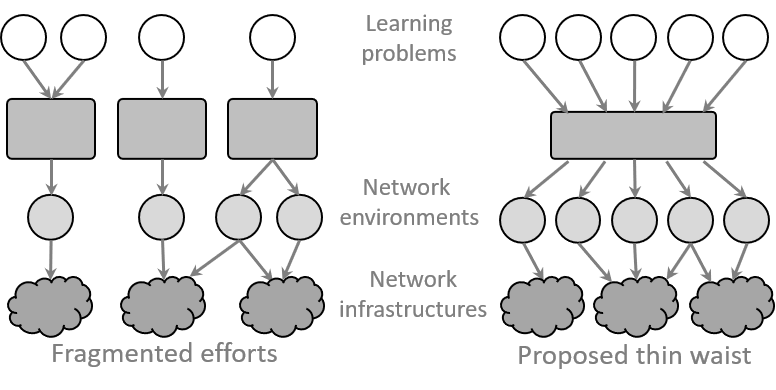

netUnicorn#
netUnicorn is a platform for building and running data pipelines on different nodes for data collection experiments. It simplifies expressing and realizing diverse data-collection intents over disparate network virtual (e.g., Mininet) and physical infrastructures (e.g., PINOT, SaltStack, Amazon AWS, MS Azure Container Instances, etc.).
This platform is a pipeline-based platform (like Apache Airflow or CI/CD solutions), but instead optimizes the following:
the ability to use different infrastructures via specific connectors (e.g., SaltStack-based, Azure Container Instances, Mininet, etc.)
the short time between tasks
work under the conditions of an unstable network
reproducibility and easy sharing of tasks and pipelines
“I want to try it!”#
You can ask netUnicorn team to provide your credentials to netUnicorn instance.
You can deploy your instance on AWS EC2 using “netunicorn-v0.4” AMI (see AWS Deployment section in documentation)
You can deploy your instance anywhere with Docker support using our Deployment guide
Resources#
Here are some resources to get you started:
netUnicorn documentation#
Contains all the API documentation, examples, user and administrator guides.
netUnicorn library#
Contains tasks and pipelines for different data collection experiments, including provided by community.
Support#
You can join netUnicorn Slack workspace for support and discussions.
netUnicorn GitHub organization#
Contains all the repositories for netUnicorn project.
netUnicorn source code#
Contains the source code of the netUnicorn platform, including base, client, and director components.
Cite us#
netUnicorn paper#
Text:
Roman Beltiukov, Wenbo Guo, Arpit Gupta, and Walter Willinger. 2023.
In Search of netUnicorn: A Data-Collection Platform to Develop Generalizable ML Models for Network Security Problems.
In Proceedings of the 2023 ACM SIGSAC Conference on Computer and Communications
Security (CCS ’23), November 26–30, 2023, Copenhagen, Denmark.
ACM, New York, NY, USA, 15 pages. https://doi.org/10.1145/3576915.3623075
Bibtex:
@inproceedings{10.1145/3576915.3623075,
author = {Beltiukov, Roman and Guo, Wenbo and Gupta, Arpit and Willinger, Walter},
title = {In Search of NetUnicorn: A Data-Collection Platform to Develop Generalizable ML Models for Network Security Problems},
year = {2023},
isbn = {9798400700507},
publisher = {Association for Computing Machinery},
address = {New York, NY, USA},
url = {https://doi.org/10.1145/3576915.3623075},
doi = {10.1145/3576915.3623075},
booktitle = {Proceedings of the 2023 ACM SIGSAC Conference on Computer and Communications Security},
pages = {2217–2231},
numpages = {15},
keywords = {artificial intelligence, data collection, network security, generalizability, machine learning},
location = {<conf-loc>, <city>Copenhagen</city>, <country>Denmark</country>, </conf-loc>},
series = {CCS '23}
}
Extended report (ArXiv)#
Motivation#
The remarkable success of the use of machine learning-based solutions for networking problems has been impeded by the developed ML models’ inability to maintain efficacy when used in different network environments exhibiting different network behaviors. This issue is commonly referred to as the generalizability problem of ML models.
To address the generalizability issue, we need to simplify iterative collection of labelled, high-quality and realistic network data for a wide range of learning problems from diverse network environments. netUnicorn aims to address this problem ensuring that a researcher (or practitioner) can iteratively collect the desired network data, gradually eliminating the data-related problems to address the model generalizability issues.
Existing Approaches#
Very few previous efforts have focused on simplifying endogenous collection of networking data. Given this lack of focus, we only have solution that are typically fragmented in the sense that each effort is custom-designed for a specific learning problem or specific network environment. These fragmented solutions are not suited to solve the model generalizability issues.

Key Idea#
To simplify data collection for learning problems in network, we take inspiration from the classic hourglass model, where the different learning problems comprise the top layer, the different network environments constitute the bottom layer, and netUnicorn serves as the thin waist that connects the two layers. We realize this abstraction by developing a new programming abstraction that essentially disaggregates data-collection intents or policies (i.e., answering what data to collect and from where) from mechanisms (i.e., answering how to collect the desired data on a given platform)—simplifying collecting data from disparate network infrastructures.
Further, netUnicorn’s programming abstraction disaggregates the high-level intents into self-contained and reusable tasks—simplifying collecting data for different learning problems.
netUnicorn takes responsibility for compiling these high-level intents into target-specific instructions, deploying them to appropriate data-collection nodes, and executing them while handling various runtime events such as link or node failures. By doing so, netUnicorn streamlines the data collection process and ensures efficient execution in dynamic network environments.